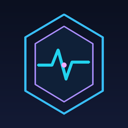

One event stream. One source of truth. Every interface. Workers emit structured events; a local collector owns the state; CLI, Discord, Webapp and Desktop render the same snapshot. Progress is computed from completed task weights and verified evidence — never from elapsed time.
Events hit disk with fsync before any HTTP call. Disconnect Discord, close the terminal — events are replayed on reconnect.
claimed → implemented → verified → committed → pushed are distinct. A green light needs evidence, not a claim.
Blocked and stalled workers surface immediately. Long tool calls are legitimate: investigate, never auto-kill.
Every event is stored. Rewind the whole operation and see exactly how the agents got there.
workforge serve # collector · 127.0.0.1:8765
python examples/demo_session.py # 5 projects, 48 events
workforge monitor # live Rich dashboardView the repository → Phase 1 + 2 shipped Phase 3 Discord next